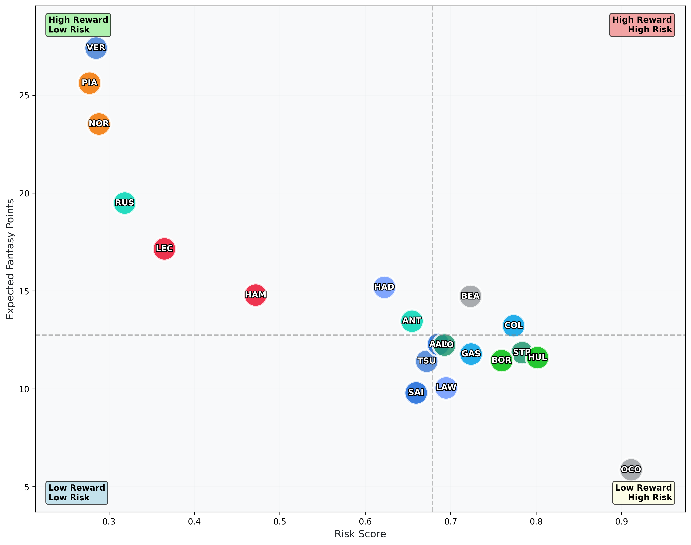

üèéÔ∏è F1 Fantasy Predictor
Data-driven team recommendations using Monte Carlo simulations and real 2025 season data
United States Grand Prix
Race Date: 19 October 2025
2x
O. PIASTRI
McLaren
$26.6M
I. HADJAR
Racing Bulls
$7.1M
O. BEARMAN
Haas
$7.1M
P. GASLY
Alpine
$4.5M
F. COLAPINTO
Alpine
$4.5M
MCLAREN
Constructor
$35.4M
RED BULL RACING
Constructor
$29.6M
Total Cost: $114.8M
Expected Points: 193.0
Expected Points: 193.0
Last updated: 17 October 2025 at 09:04 UTC
⚠️ Disclaimer: These predictions are based on statistical analysis and historical data.
F1 results can be unpredictable, so use these recommendations as a guide only.
 Simulated race progression showing how driver positions evolve throughout the race
Simulated race progression showing how driver positions evolve throughout the race
 Constructor value analysis comparing price-to-points efficiency across all possible constructor combinations
Constructor value analysis comparing price-to-points efficiency across all possible constructor combinations

Fantasy value quadrant analysis showing the relationship between driver cost and expected points